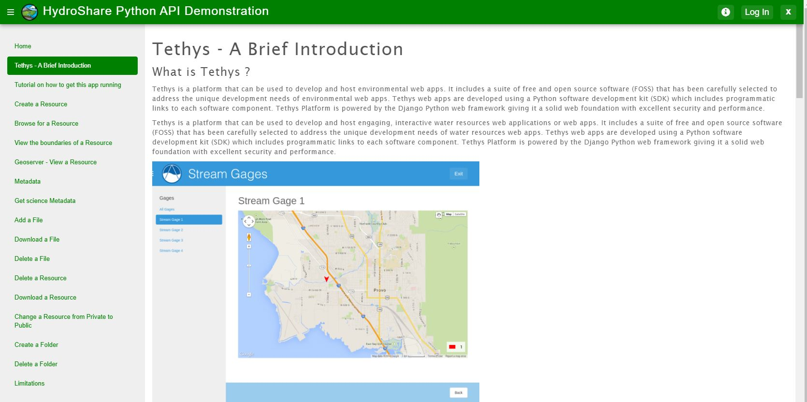

HydroShare API Tethys app
HydroShare is the Consortium of Universities for the Advancement of Hydrologic Science, Inc. (CUAHSI)'s web based hydrologic information system for users to share and publish data and models in a variety of flexible formats, and to make this information available in a citable, shareable and discoverable manner. It enables users to collaborate and work as teams in a web based collaborative environment, thereby enhancing research, education and application of hydrologic knowledge.
Tethys is a platform that can be used to develop and host environmental web apps. It includes a suite of free and open source software (FOSS) that has been carefully selected to address the unique development needs of environmental web apps. Tethys web apps are developed using a Python software development kit (SDK) which includes programmatic links to each software component. Tethys Platform is powered by the Django Python web framework giving it a solid web foundation with excellent security and performance.
 Web app home pageIn a service oriented architecture based framework, communication between end user tools and the cloud based data storage system is facilitated via application programmer interfaces and so this app will be a map or a guide to effectively use the API by HydroShare to generate the same queries and commands found on the main HydroShare website. I will strategically help the learner understand the API and show ways to use the APIs found in their own websites and web apps. There will also be step by step tutorials to the python code which they can modify or alter based to their needs. The source code to my tethys app will also be provided for reference and this app is open for improvement as there will be updates in the future to the API which will enable more functions and easier to understand code. I will also be providing some javascript tutorials for the minimal js we use on this app. The app will be built aiming to help the learner use the API in his web app and making the HydroShare API as universal as possible in its usage. .
Click here to go to the HydroShare API Tethys appProject on National Household Travel Income - Car to person Index
More trains - Less cars
This project is to study the National Household Travel Survey and get information that we need to prove certain factors:
The reason I did this analysis is because the no. of cars per household in Provo is highest than any other city in the US. And this is the reason why the pollution is also the highest than majority of the cities in the US.
Utah car populationAs per reports, each household in Provo and Ogden have an average car population of 2.04 - 2.1 cars per household which is a major contributor to pollution.
By encouraging an increase in train infrastructure and having train transport access, we can lower this rate in the future.
Click here to go to view the Analysis